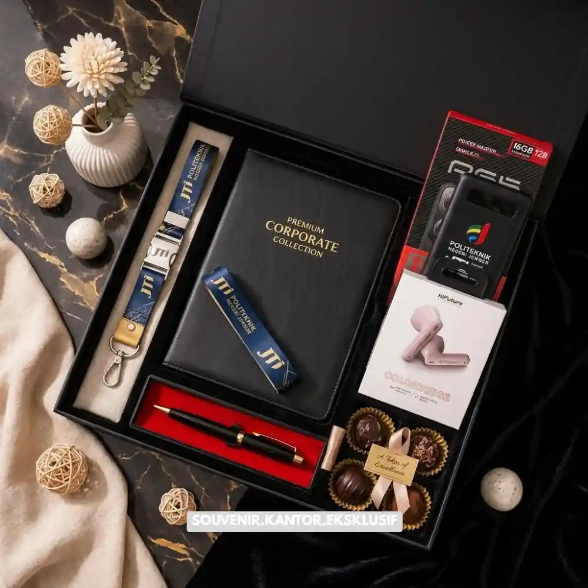

Daftar Isi
Corporate gift box adalah kumpulan produk premium dalam satu kemasan bertema, dilengkapi identitas visual perusahaan seperti logo dan warna korporat. Fungsi utamanya mencakup apresiasi klien, penyambutan mitra baru, hadiah karyawan, dan media branding pada acara resmi.
- Isi umum terdiri dari kombinasi alat tulis premium, drinkware, snack pilihan, dan aksesori kerja bernilai guna tinggi.
- Harga bervariasi tergantung jumlah pesanan, tingkat kustomisasi, dan kualitas material yang dipilih.
- VendorSouvenir menyediakan layanan pemesanan corporate gift box custom dengan proses produksi yang terukur dan hasil siap kirim ke seluruh Indonesia.
Apa itu corporate gift box, siapa yang membutuhkannya, dan kapan produk ini paling efektif digunakan? Corporate gift box adalah paket hadiah bisnis yang disusun secara tematik untuk mewakili identitas dan nilai sebuah perusahaan kepada penerimanya.
Produk ini umumnya dibutuhkan oleh divisi HR, marketing, dan procurement saat momen penting seperti penyambutan klien baru, perayaan ulang tahun perusahaan, hari raya, atau apresiasi akhir tahun kepada karyawan dan mitra kerja. Semakin banyak perusahaan di Indonesia menjadikan corporate gift box sebagai bagian dari strategi relationship management karena dampaknya yang terukur terhadap loyalitas dan citra merek.
Survei internal industri merchandise korporat pada 2025 mencatat bahwa lebih dari 60 persen perusahaan skala menengah hingga besar di Indonesia mengalokasikan anggaran khusus untuk hadiah korporat setiap tahunnya. Tren ini menunjukkan bahwa corporate gift box bukan lagi sekadar formalitas, melainkan investasi komunikasi yang berdampak langsung pada hubungan bisnis jangka panjang.
Apa Itu Corporate Gift Box dan Mengapa Penting bagi Bisnis?
Corporate gift box adalah kemasan hadiah berisi kumpulan produk pilihan yang disusun khusus untuk kebutuhan bisnis, biasanya dilengkapi elemen branding seperti logo, warna korporat, dan pesan personal dari perusahaan pengirim.
Kehadiran corporate gift box memberikan dampak yang lebih besar dibandingkan hadiah individual biasa karena disusun dengan narasi dan tujuan yang jelas. Ketika sebuah perusahaan mengirimkan gift box kepada klien, pesan yang disampaikan bukan hanya ucapan terima kasih, tetapi juga representasi standar kualitas dan perhatian perusahaan terhadap relasi bisnisnya. Hal ini menjadikan corporate gift box sebagai instrumen branding sekaligus alat membangun kepercayaan.
Bagi divisi HR, corporate gift box juga berperan penting dalam program employee engagement. Pemberian hadiah yang tersusun rapi dan bernilai guna tinggi terbukti meningkatkan rasa dihargai pada karyawan, yang pada akhirnya berkontribusi terhadap retensi talenta dan produktivitas kerja.
Apa Saja Komponen Ideal dalam Corporate Gift Box?
Komponen ideal corporate gift box terdiri dari kombinasi barang fungsional dan barang bernilai apresiasi, seperti alat tulis premium, drinkware branded, snack pilihan, serta aksesori kerja yang relevan dengan gaya hidup penerima.
Pemilihan isi gift box sebaiknya mempertimbangkan keseimbangan antara nilai guna dan nilai estetika. Alat tulis seperti pulpen premium atau notebook branded memberikan kesan profesional yang tahan lama karena digunakan berulang kali di lingkungan kerja penerima. Drinkware seperti tumbler atau mug custom logo juga menjadi favorit karena visibilitasnya tinggi dan sering digunakan setiap hari, sehingga logo perusahaan terus terlihat dalam jangka panjang.
Alat Tulis dan Perlengkapan Kerja Premium
Kategori ini mencakup pulpen eksekutif, notebook kulit sintetis, dan organizer meja. Barang-barang ini dipilih karena fungsinya yang relevan dengan aktivitas kerja sehari-hari, sehingga penerima memiliki alasan kuat untuk terus menggunakannya.
Drinkware dan Perlengkapan Personal
Tumbler stainless, mug keramik custom, dan botol minum branded termasuk kategori paling diminati dalam corporate gift box karena tingkat pemakaian yang tinggi dan daya tahan produk yang baik.
Snack dan Elemen Sensorik
Pilihan cokelat premium, kopi kemasan eksklusif, atau teh artisan menambahkan sentuhan personal yang membuat gift box terasa lebih hangat dan tidak semata-mata transaksional.

Komponen Fungsional Corporate Gift Box
Bagaimana Cara Memilih Corporate Gift Box yang Tepat untuk Kebutuhan Perusahaan?
Cara memilih corporate gift box yang tepat adalah dengan menyesuaikan tema, anggaran, dan jumlah penerima terhadap tujuan acara, baik itu untuk klien, mitra bisnis, maupun karyawan internal.
Langkah pertama adalah menentukan tujuan pengiriman gift box, apakah untuk membangun kesan pertama kepada klien baru, mempertahankan relasi jangka panjang, atau mengapresiasi kinerja tim internal. Tujuan ini akan menentukan tingkat eksklusivitas dan jenis produk yang paling relevan digunakan.
Langkah kedua adalah menetapkan anggaran per unit secara realistis. Anggaran yang jelas membantu proses kustomisasi berjalan efisien tanpa mengorbankan kualitas material dan kerapian hasil cetak logo.
Langkah ketiga adalah memastikan proses produksi memiliki waktu pengerjaan yang cukup, terutama untuk pesanan dengan jumlah besar dan tingkat kustomisasi tinggi seperti embossing atau UV printing.
Data internal pelaku industri merchandise korporat pada periode 2024-2025 menunjukkan bahwa pemesanan corporate gift box paling banyak dilakukan pada kuartal keempat setiap tahun, sejalan dengan momentum evaluasi akhir tahun dan perayaan hari raya. Perusahaan yang melakukan pemesanan lebih awal umumnya mendapatkan fleksibilitas kustomisasi yang lebih luas dibandingkan pemesanan mendadak.
Faktor yang Mempengaruhi Harga Corporate Gift Box
Harga corporate gift box dipengaruhi oleh jumlah unit pesanan, tingkat kustomisasi logo, jenis material kemasan, serta kompleksitas isi produk di dalamnya.
Semakin besar jumlah pesanan, umumnya semakin rendah harga per unit karena efisiensi produksi massal. Tingkat kustomisasi seperti cetak logo digital, embossing pada kotak kayu, atau label khusus juga menambah biaya produksi namun sebanding dengan nilai branding yang dihasilkan. Material kemasan turut menentukan kesan premium; kotak kayu atau kotak rigid dengan finishing matte cenderung memberikan kesan lebih eksklusif dibandingkan kemasan karton standar.
Perbandingan Jenis Kemasan Corporate Gift Box
Jenis kemasan corporate gift box umumnya terbagi menjadi kotak karton premium, kotak rigid, dan kotak kayu, masing-masing memberikan kesan dan tingkat biaya yang berbeda sesuai kebutuhan acara.
Kotak karton premium menjadi pilihan paling fleksibel karena proses produksinya relatif cepat dan biaya yang lebih terjangkau untuk pemesanan dalam jumlah besar. Kotak jenis ini cocok digunakan untuk acara internal perusahaan atau distribusi ke banyak penerima sekaligus, seperti seluruh karyawan pada momen akhir tahun. Meskipun harganya lebih terjangkau, kualitas cetak logo pada kotak karton premium tetap dapat menghasilkan tampilan yang rapi apabila menggunakan teknik cetak digital berkualitas tinggi.
Kotak rigid menawarkan struktur yang lebih kokoh dan kesan premium yang lebih terasa dibandingkan karton standar. Material ini umumnya dipilih untuk acara yang membutuhkan kesan lebih eksklusif, seperti penyambutan klien penting atau perayaan pencapaian besar perusahaan. Permukaan kotak rigid juga lebih mudah diberi finishing khusus seperti laminasi doff atau glossy sesuai preferensi branding.
Kotak kayu menjadi opsi dengan tingkat eksklusivitas tertinggi karena kesan mewah dan tahan lama yang dihasilkan. Material ini sering dipilih untuk penerima pada level eksekutif senior atau mitra bisnis strategis, mengingat daya tahan kotak kayu memungkinkan penerima menggunakannya kembali sebagai tempat penyimpanan setelah isi gift box digunakan. Pemilihan jenis kemasan yang tepat sebaiknya disesuaikan dengan anggaran, target penerima, dan pesan yang ingin disampaikan perusahaan melalui hadiah tersebut.
Kesalahan Umum saat Memesan Corporate Gift Box
Kesalahan umum yang sering terjadi meliputi pemesanan mendadak tanpa mempertimbangkan waktu produksi, isi produk yang tidak relevan dengan profil penerima, dan minimnya konsistensi branding pada kemasan.
Banyak perusahaan baru menyadari kebutuhan gift box mendekati acara, sehingga waktu produksi menjadi sangat terbatas dan pilihan kustomisasi pun berkurang. Kesalahan lain adalah memilih isi produk generik tanpa mempertimbangkan siapa penerimanya, misalnya mengirimkan barang yang kurang relevan untuk profil eksekutif senior. Konsistensi branding pada kemasan luar dan isi di dalamnya juga sering terlewat, padahal elemen ini yang membuat gift box terasa terkurasi dengan baik, bukan sekadar kumpulan barang acak.

Solusi Gift Set dari Vendor Terpercaya
Kesimpulan
Corporate gift box adalah investasi komunikasi bisnis yang efektif untuk memperkuat relasi klien, mitra, dan karyawan sekaligus memperkuat citra profesional perusahaan. Pemilihan isi yang relevan, kustomisasi branding yang konsisten, dan perencanaan waktu produksi yang matang menjadi kunci keberhasilan program hadiah korporat ini.
VendorSouvenir siap membantu perusahaan Anda merancang corporate gift box custom logo yang sesuai kebutuhan, anggaran, dan tenggat waktu acara. Hubungi tim VendorSouvenir sekarang untuk konsultasi gratis dan dapatkan penawaran terbaik untuk kebutuhan hadiah korporat perusahaan Anda.
Untuk kebutuhan yang lebih spesifik, pelajari lebih lanjut mengenai ide corporate gift box untuk mitra bisnis, opsi corporate gift box untuk apresiasi karyawan, dan layanan corporate gift box custom sesuai identitas brand perusahaan Anda.
Butuh Bantuan Merancang Corporate Gift Box?
Tim ahli kami siap membantu Anda menyusun paket hadiah eksklusif yang menarik.
Pilihan barang akan disesuaikan dengan ketersediaan budget dan kebutuhan Anda.
Seluruh desain kemasan akan kami selaraskan dengan identitas visual perusahaan Anda.
Dapatkan penawaran harga terbaik untuk pesanan massal!
FAQ Corporate Gift Box
Apa itu corporate gift box?
Corporate gift box adalah paket hadiah bisnis berisi kumpulan produk pilihan yang disusun dengan tema dan identitas visual perusahaan untuk keperluan apresiasi klien, mitra, atau karyawan.
Berapa minimal pemesanan corporate gift box custom?
Minimal pemesanan bervariasi tergantung vendor dan tingkat kustomisasi, umumnya disesuaikan dengan skala acara perusahaan, mulai dari kebutuhan puluhan hingga ribuan unit.
Apakah corporate gift box bisa dicetak dengan logo perusahaan?
Ya, corporate gift box umumnya dapat dikustomisasi dengan logo perusahaan melalui teknik cetak digital, embossing, atau label khusus sesuai material kemasan yang dipilih.
Berapa lama proses produksi corporate gift box?
Waktu produksi bergantung pada jumlah unit dan tingkat kustomisasi, sehingga disarankan melakukan pemesanan jauh sebelum tanggal acara agar hasil lebih maksimal.
Bagaimana cara memesan corporate gift box di VendorSouvenir?
Perusahaan dapat menghubungi tim VendorSouvenir melalui website resmi untuk konsultasi kebutuhan, penentuan isi produk, dan proses kustomisasi sesuai anggaran dan tenggat waktu.
Maroon Souvenir
Partner Corporate Gift terpercaya di Indonesia. Berpengalaman melayani ratusan perusahaan sejak 2018.
Lihat Portofolio Kami